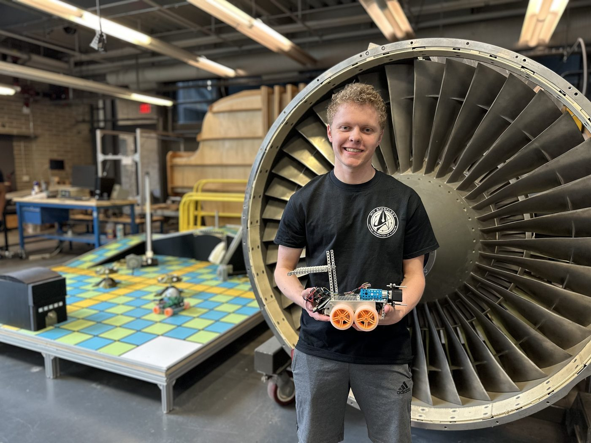
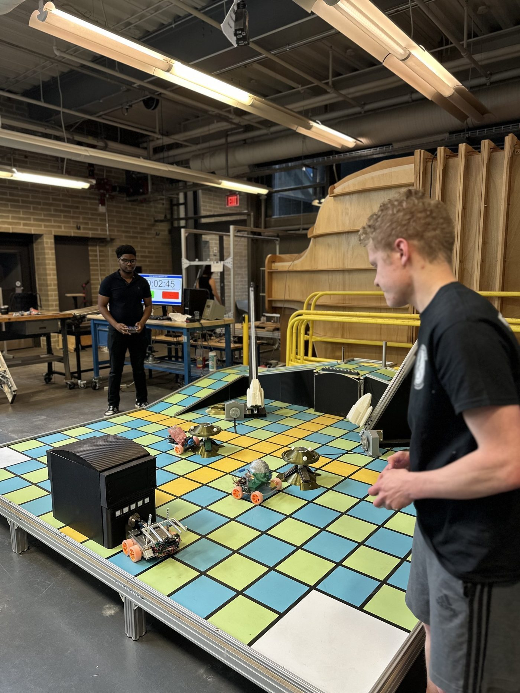
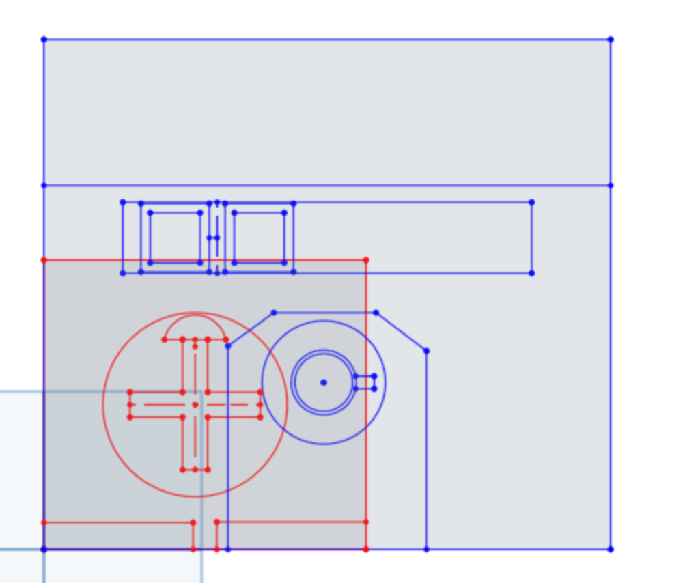
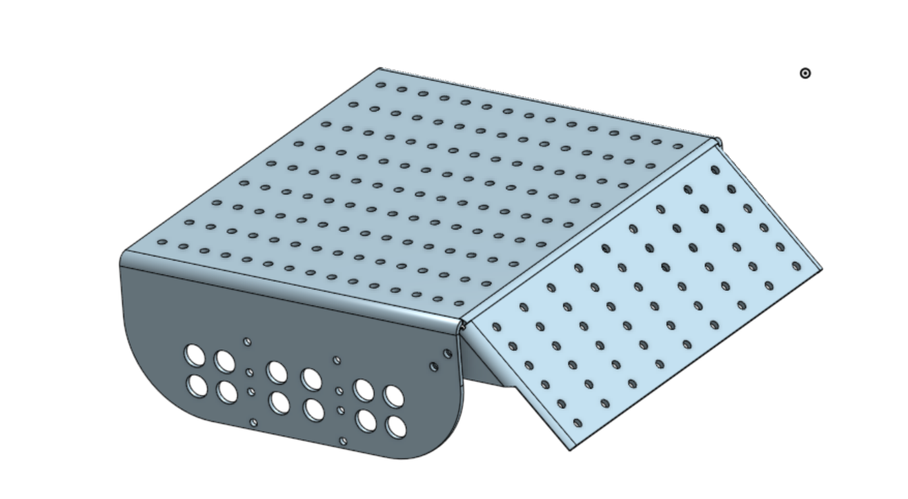
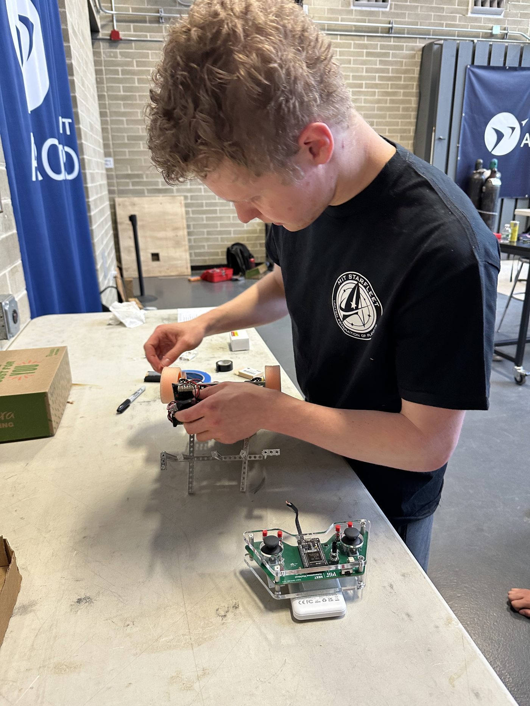

Star Trek Adventure — 2nd Place, $125 Prize
Solo-designed, built, and programmed an autonomous/manual rover for 16.632B's head-to-head "Star Trek Adventure" gameboard competition — retrieving communicators, powering a shuttle takeoff, running a tricorder, and outmaneuvering an opponent under a hard 3-minute clock. Placed 2nd overall individually and won a $125 prize.

The Problem
The "Star Trek Adventure" gameboard scores two robots head-to-head over a 3-minute round across six challenges — retrieving communicators and dilithium crystals, dropping spheres to open a cave door, cranking a shuttle takeoff mechanism, pressing tricorder buttons and rotating its dial, and locating or blocking a roaming "Klingon." Every challenge can be run manually or autonomously, and autonomous manipulation scores double points, with separate points for autonomous navigation to each station. Every student built and programmed their own robot individually and competed head-to-head in a bracket. My robot needed a mechanism that could actuate both the shuttle crank and the tricorder dial without changing its overall height, a chassis that turned predictably enough for reliable autonomous routes, and a strategy that actually maximized score rather than just checking every box.

Approach
Before building anything, I laid out the full point-value breakdown for every challenge — manual points, autonomous-navigation points, and fully-autonomous totals with the 2x manipulation multiplier — to let the numbers drive the strategy instead of guessing. That analysis showed the Shuttle (1,880 pts) and Tricorder (1,820 pts) challenges had by far the highest ceiling, so I built a "Shuttle-First" high-risk/high-reward strategy: race to grab both single-capture challenges autonomously before my opponent could, with a fallback plan (Communicator + Dilithium consolidation, geographically clustered to minimize navigation overhead) if the shuttle looked contested. I backed the timeline with distance/speed math (tiles per second at candidate robot speeds) to set concrete manipulation-time budgets — 15 seconds for the shuttle crank, 20 seconds for the tricorder. On the hardware side, I designed a single combined motor mechanism to drive both the shuttle crank and the tricorder dial without adjusting the robot's height, working through the CAD dimensioning and verifying the alignment in an Onshape assembly. I then redesigned the chassis to move electronics to a rear panel (freeing the top surface for manipulator components) and switched from the original AMBot's rotating-wheel steering to four-wheel drive for more predictable, lower-sweep-variation autonomous turns.


What I Built
I quantified the full scoring model for every challenge to drive the strategy decision, then designed and CAD'd a combined shuttle-crank/tricorder-dial actuation mechanism that worked at a single fixed height, catching in testing that the shuttle actuation was far too slow (about 4 minutes 50 seconds) and would need faster motors or a gear reduction. I redesigned the chassis for four-wheel drive and rear-mounted electronics, added multiple mounting hole patterns for flexible actuator placement, and built two different wheel-placement configurations. I programmed the autonomous navigation stack — line-tracking sensor, IMU, and wheel encoders — to execute the chosen route and manipulate each challenge within the competition's 3-minute rounds.

Results & What I Learned
I placed 2nd overall individually in the tournament, winning a $125 prize. Laying out the full scoring model before building anything paid off — it turned "which challenges should I target" from a gut call into a quantified decision, and the shuttle/tricorder racing strategy captured the highest-value points on the board. The biggest lesson came from testing: the combined actuation mechanism worked geometrically, but was drastically underpowered for the shuttle's crank, a reminder that a mechanism that "works" in CAD and in a slow bench test still has to hit a hard time budget in competition, which pushed the chassis redesign toward simpler, more predictable four-wheel-drive motion so the navigation side of the strategy could stay reliable even as the manipulator side was still catching up.